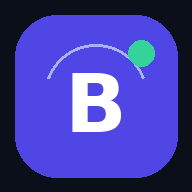

參數設定 （存在這台裝置）
資料備份與同步
你的運彩賠率、自訂先發、下注紀錄、設定只存在這台裝置的瀏覽器。換手機或想在電腦上看同一份紀錄，請用「匯出備份」再到另一台「匯入備份」。
加到手機主畫面
・iPhone：Safari →「分享」→「加入主畫面」 ・Android：Chrome →「⋮」→「加到主畫面」
本系統為統計分析工具，不保證獲利。運彩含莊家抽水，長期而言多數下注為負期望值；請量力而為，未滿 18 歲不得購買運動彩券。

資料已加密，請輸入網站密碼
—
目前資金
—
你的運彩賠率、自訂先發、下注紀錄、設定只存在這台裝置的瀏覽器。換手機或想在電腦上看同一份紀錄，請用「匯出備份」再到另一台「匯入備份」。
加到手機主畫面
・iPhone：Safari →「分享」→「加入主畫面」 ・Android：Chrome →「⋮」→「加到主畫面」
本系統為統計分析工具，不保證獲利。運彩含莊家抽水，長期而言多數下注為負期望值；請量力而為，未滿 18 歲不得購買運動彩券。